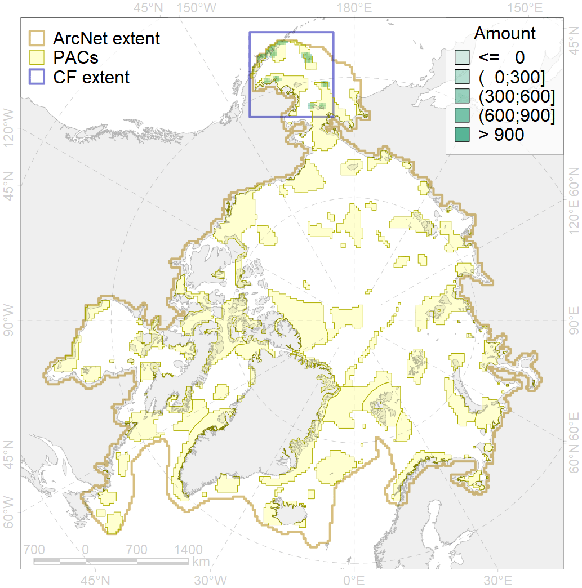
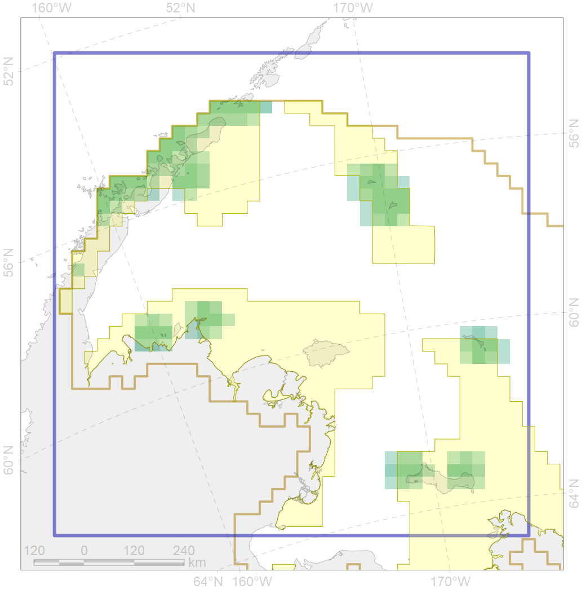

2055

| CF code | 2055 |
| CF name | Steller Sea Lion habitats of critical importance |
| Time Period | 2018 |
| Source(s) | NOAA AFSC |
| Seasonality | January-December |
| Depth Horizon | 0-500m |
| Methodology | Defined based on the best available scientific data |
| Use Restrictions | Open source |
| Author Name | Irina Trukhanova |
| Notes | Area around major rookeries |
| Scenario’s Target | 0.576 |
| Target Achievement | 0.959 (Scenario: 166.5%) |
| PAC | Share of the Total Amount within the PAC | Share of the Target Achievement for the ArcNet | PAC’s Contribution to the Target Achievement |
|---|---|---|---|
| 1 | 40.3% | 69.9% | 42.0% |
| 2 | 20.6%20.7% | 35.1%35.2% | 21.1%21.2% |
| 3 | 14.2%15.8% | 24.6%27.3% | 14.8%16.4% |
| 5 | 19.2%19.2% | 33.1%33.1% | 19.9%19.9% |
| inner | 94.3%95.9% | 162.7%165.5% | 97.7%99.4% |
| outer | 5.7%22.0% | 3.8%31.3% | 2.3%18.8% |
| † supplement values are for area consistence whereas principal values are for Accenter compatible gridded stats |